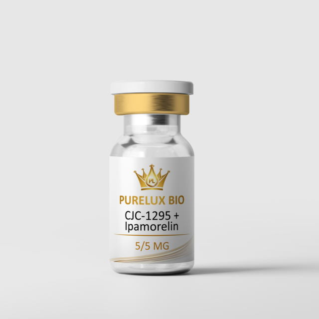
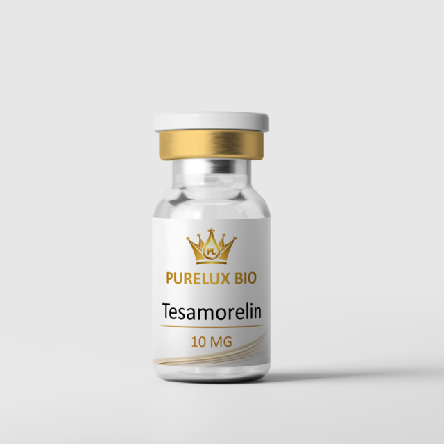
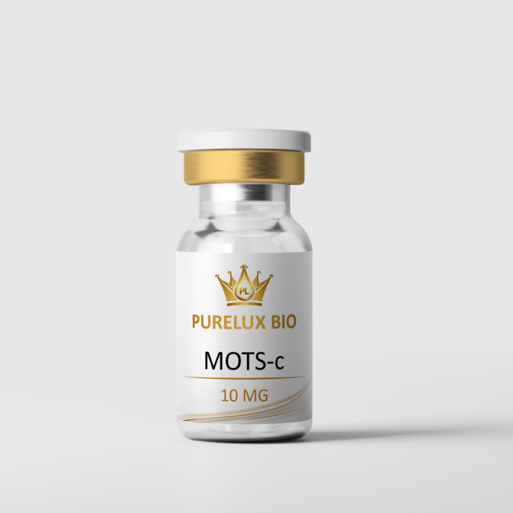

◇
Understand The Categories
Finally see how the major research peptide families differ and what the science actually explores, in plain language.
A free, members only library that turns the confusing world of research peptides into clear, trustworthy knowledge. Built for the curious, before the noise.
We believe an informed community is a stronger community. The education stays free because trust comes first — access may close as we grow.
Everything framed as education and research. No hype, no claims — just clarity.
Finally see how the major research peptide families differ and what the science actually explores, in plain language.
Cut through the forum hype and marketing spin with grounded, research framed education you can trust.
A private community of curious minds asking better questions and learning together — free, for now.
By invitation · One email, instant entry · No spam, ever.
"I'd spent months lost in forums. One afternoon here and the categories finally made sense. I can't believe this is free."

"Finally a place that explains the research without trying to sell me something in the same breath. The myth vs. research lessons are gold."

"It feels exclusive in the best way — like being handed the notes the experienced people never share. Premium, calm, trustworthy."

A visual reference for the compounds discussed throughout this library. Shown for education only — these are research materials, studied in research settings.

CJC-1295 + IpamorelinGH secretagogues
TesamorelinGH secretagogue
MOTS-cMetabolic / cellularFor research use only. Not for human or veterinary use. Not a drug or medical device. Free Peptide University is an educational resource and does not sell compounds.
Short, honest answers.
Yes. Full access to the education library and community costs nothing right now. We may introduce paid tiers later — early members keep access.
No. Everything here is educational and research framed only. It is not medical advice and does not replace a licensed professional.
Anyone curious about research peptides who wants real understanding before they make any decisions.
Enter your email, confirm, and you are instantly inside the library and community.
Join a private circle of curious people learning peptides the right way. Instant entry. Free, for now.
Know someone who'd value this? Sharing is how the inner circle grows — and how you earn standing in it.
A structured, research framed education library. Start anywhere — each module is built to make a confusing topic feel clear.
Researchers often study compounds in combination. Below is what the research explores about the most-discussed pairings — the science of why they're studied together. Conceptual only; specific figures live in the members Reference.
Reconstitution figures, research protocol ranges, and combination references for every compound — research framed, members only.
Short, clear, research-framed reads. New articles regularly — the search-friendly front door to the library.
Practical math for research preparation. These tools perform measurement calculations only — they do not recommend any amount, protocol, or use. You enter the figures; the tool does the arithmetic.
Find the concentration when a lyophilized vial is dissolved in bacteriostatic water.
Convert a research quantity you specify into a syringe volume. This only converts units — it suggests nothing.
Free access is open — join 2,400+ curious members before the door closes.